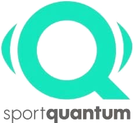

La SQ Air, simplement
L’application de la SQ Air est riche : visuels d’entraînement, matchs, contrats, jeux, suivi. Ce site part de ce que vous voulez faire, et vous mène au bon exercice, avec des fiches prêtes à l’emploi pour le tireur et l’entraîneur.
Je veux…
Partez de ce que vous voulez améliorer : chaque tuile ouvre l’exercice qui y répond.
Selon votre profil
Le débutant
Commencer par les jeux et le carton blanc : on apprend le geste sans la pression du score, puis on passe aux visuels zonés.
Le compétiteur
Les visuels techniques pour corriger un défaut précis, puis les matchs et les contrats pour s’entraîner sous pression.
L’entraîneur
Chaque fiche donne l’objectif, la mise en place, la consigne et deux critères de réussite : celui du tireur et celui de l’entraîneur.
Le club et l’école de tir
Les jeux et l’arbre de duel animent un groupe, et les résultats exportés permettent de suivre chaque jeune.
Une séance type
Un exemple d’enchaînement pour une séance complète sur la SQ Air. Les durées sont indicatives : adaptez-les à votre niveau et à votre programme.
- 10 min · S’échauffer
Carton blanc, l’échauffement en 3 temps : le lâcher, puis le regard sur le guidon, puis le verrouillage du poignet. Voir → - 15 min · Travailler un point technique
Un seul visuel, choisi selon le défaut du moment : bande verticale pour le lâcher, rond noir pour la tenue. Voir → - 15 min · Tirer avec un objectif
Un contrat SQ Air ou une série de match : le score compte, on applique ce qu’on vient de travailler. Voir → - 5 min · Finir sur un jeu et noter
Un jeu ou un duel pour terminer sur une note positive, puis exporter ses résultats. Voir →
Quoi de neuf dans l’appli
La version 3.0.0 de l’application (septembre 2025) apporte de nouveaux formats pour varier l’entraînement, comme les cibles basculantes suédoises. La SQ Air est homologuée par l’ISSF pour toutes les disciplines officielles à air comprimé.
Les rubriques du site
Les tireurs au pistolet trouveront aussi les visuels d’entraînement détaillés sur Ma cible électronique ↗, et les carabiniers les bases de la position sur le site Carabine ↗.
La SQ Air ne se contente pas de compter les points. Elle affiche des visuels d'entraînement (carton blanc, bandes, rond noir…), propose des contrats et des jeux, et garde chaque série en mémoire. De quoi travailler un point technique précis, seul ou avec un entraîneur.
Carton blanc, rond noir, bandes verticales et horizontales : un visuel pour chaque point technique.
Les épreuves ISSF et FFTir, la variante carton (entrée en cible, centrage, cible floue) et les contrats.
26 jeux, dont l'arbre de duel, pour s'entraîner à deux ou en groupe.
Exporter ses résultats et entretenir la cible SQ10.
À voir aussi sur bensport
Ce que fait la SQ Air
La SQ Air ne se contente pas de compter les points : elle aide à travailler, à se mesurer et à progresser.
1. Elle compte au dixième
Chaque impact s’affiche en direct, avec une précision au-delà du dixième de point (125 micromètres), conforme aux normes olympiques.
2. Elle fait travailler un point précis
Des visuels d’entraînement (carton blanc, bandes, rond noir…) isolent le lâcher, la tenue ou la visée.
3. Elle met en situation de match
Matchs aux règles des épreuves, essais et temps de match, contrats avec un objectif à atteindre.
4. Elle rend le tir ludique et mesurable
Des jeux à plusieurs pour apprendre et motiver, et des résultats gardés en mémoire pour suivre ses progrès.
MonTirSportif – https://sq.montirsportif.com/